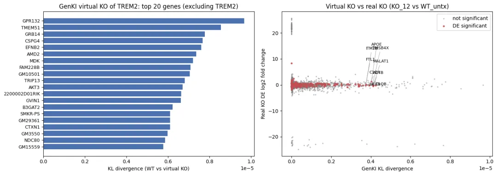
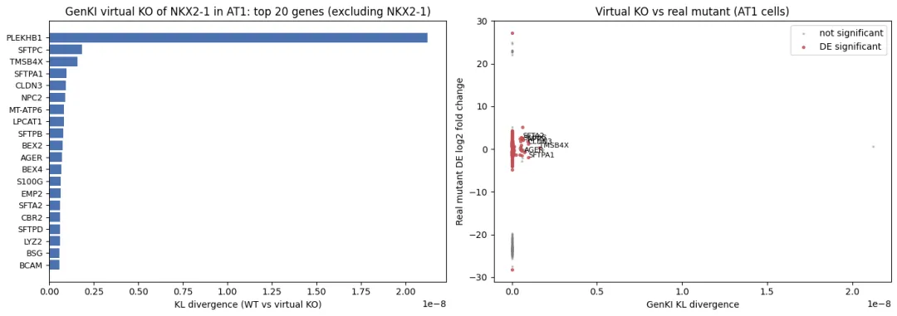
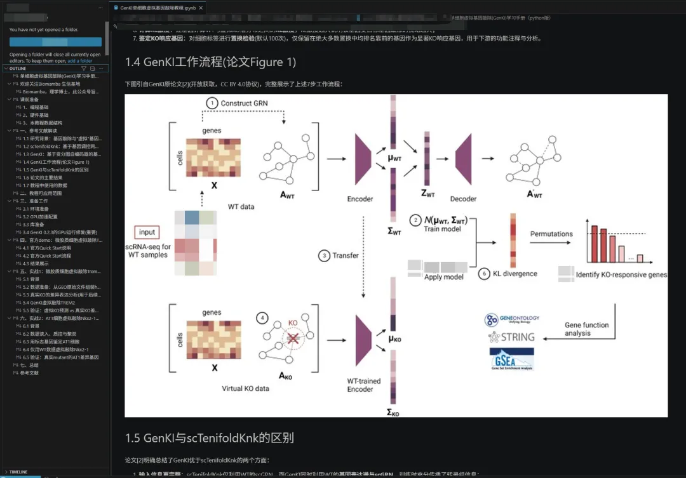

单细胞虚拟敲除到底准不准啊，GeneKI实战测评
原文：https://mp.weixin.qq.com/s?__biz=MzAwMzIzOTk5OQ==&mid=2247541148&idx=1&sn=f052fc70bc231c78678bd8ac7424ad18&chksm=9b3c58ccac4bd1da8e14d4fc9cfcaace11d8b4ff5fbdf3ce0fa5741e4b82c24ebe66db821342#rd 合集：单细胞教程全收录
一、写在前面
之前给大家测评过风靡一时的scTenifoldKnk单细胞虚拟基因敲除,准不准?。似乎大家都单细胞虚拟敲除很感兴趣，这里我们又测试了一个虚拟敲除工具GeneKI。并且完成了以下流程：1、官方demo 小胶质数据虚拟敲除TUBG1，TUBG1的dis排名第一(似乎是废话)；2、 TREM2敲除实战虚拟敲除TREM2，预测结果与真实Trem2 KO的差异基因显著重合(Fisher p=1.6e-3)，并再现APOE、补体C1Q等Trem2相关通路；3、 NKX2-1实战2这次我长了个心眼，不能只拿开发者自己的数据来进行测试。AT1细胞虚拟敲除NKX2-1(scTenifoldKnk的测试数据)，预测结果与真实Nkx2-1 mutant的差异基因高度重合(Fisher p=2.0e-26)，SFTPC/SFTPB等Nkx2-1经典靶基因名列前茅；这与scTenifoldKnk结果较为一致。4、 GPU加速：VGAE训练与置换检验全程GPU加速(用RTX 3090训练仅需~28s)；需要显卡的小伙伴可以参考：RTX5090、4080S、5070显卡上机TREM2敲除效果：

AT1细胞中NKX2-1敲除效果：
如果你有一些生信分析想法需要落地，不妨看看：
二、虚拟敲除背景介绍
2.1 研究背景：基因敲除与"虚拟"基因敲除
基因敲除(gene knockout, KO)实验是验证基因功能的金标准，但真实的KO实验(如CRISPR-Cas9、条件性敲除小鼠)通常耗时数月甚至数年、花费高昂，且很多基因的敲除是胚胎致死的，无法获得成体样本。因此，生物信息学家们一直致力于开发虚拟基因敲除(in silico / virtual KO) 工具：仅利用野生型(WT)样本的单细胞转录组(scRNA-seq)数据 ，通过数学模型模拟基因被敲除后的扰动效应，预测哪些基因的功能与该基因相关(KO响应基因)。这类工具可以部分替代真实KO实验，用于基因功能初筛、实验优先级排序与机制假设生成。
2.2 scTenifoldKnk：基于基因调控网络张量分解的虚拟敲除(Patterns, 2022)
scTenifoldKnk[1]是Cai实验室开发的R语言工具，于2022年发表在《Patterns》上。其核心思路是： (1) 对WT的表达矩阵进行随机下采样，构建单细胞基因调控网络(scGRN) ，并用张量分解 生成去噪后的邻接矩阵； (2) 将目标基因在邻接矩阵中的权重归零 ，即完成"虚拟敲除"； (3) 比较WT与虚拟KO网络中各基因的特征向量中心性 差异，通过曼-惠特尼U检验给出虚拟KO显著扰动基因[1]。 作者用SERGIO模拟器生成的人工scRNA-seq数据(3000个细胞、100个基因、5个不同规模的预定义GRN模块)以及真实数据(GSE129584的Nkx2-1、Trem2、Hnf4a等)验证了该工具的性能，但scTenifoldKnk基于R语言、仅利用GRN信息而忽略了基因表达本身，且运行较慢。
2.3 GenKI：基于变分图自编码器的基因敲除推断(NAR, 2023)
GenKI(Gene Knock-out Inference)[2]是同一团队于2023年发表在《Nucleic Acids Research》(IF≈16.6)上的Python工具。GenKI同样仅需WT的scRNA-seq数据即可完成虚拟敲除，且整个过程不利用任何真实KO样本的信息 。其核心思想是：在无监督的条件下，捕捉KO扰动引起的基因调控模式的"偏移"，从而给出稳健、可扩展的基因功能研究框架。具体原理如下：
- 构建scGRN ：对WT表达矩阵进行主成分回归网络(pcNet) 构建，即对每个基因做"去除其他基因影响的回归"(以其余基因表达的主成分为自变量的回归)，以回归系数矩阵作为基因-基因调控权重，得到加权的scGRN邻接矩阵；
- 训练VGAE模型 ：以scGRN为图的边、基因表达为节点特征，训练变分图自编码器(VGAE) 学习每个基因在潜空间中的分布(均值μ与方差S) 。VGAE的编码器由两层GCNConv组成(信息传递可收集目标基因的二阶邻域信息)，解码器为内积解码器，损失函数为边重建损失+KL散度(β-VAE框架)。论文中的训练超参数为：学习率7e-4、权重衰减9e-4、β=1e-4、Adam优化器、Xavier初始化、最多100轮并在AP(平均精度)达到峰值后提前停止；
- 迁移训练好的VGAE模型 ：训练完成后固定模型参数，用于后续WT与虚拟KO数据的编码；
- 构建虚拟KO数据 ：删除scGRN中目标基因的全部边(即删除其所有调控关系)，并将目标基因的表达列置零，得到虚拟KO数据；
- 计算潜变量 ：将WT与虚拟KO数据分别输入训练好的VGAE，得到每个基因的潜分布参数(均值与方差)；
- 计算KL散度 ：逐基因计算WT与虚拟KO潜分布之间的KL散度 ，KL散度越大说明该基因受目标基因敲除的扰动越大；
- 鉴定KO响应基因 ：对细胞标签进行置换检验(默认100次)，仅保留在绝大多数置换中均排名靠前的基因作为显著KO响应基因，用于下游的功能注释与分析。
2.4 GenKI工作流程(论文Figure 1)
下图引自GenKI原论文2，完整展示了上述7步工作流程：
2.5 GenKI与scTenifoldKnk的区别
论文[2]明确总结了GenKI优于scTenifoldKnk的两个方面：
- 输入信息更完整 ：scTenifoldKnk仅利用WT的scGRN，而GenKI同时利用WT的基因表达谱与scGRN ，训练时充分传播了转录组信息；
- 网络感受野更大 ：GenKI的VGAE编码器包含两层消息传递层 ，可以收集目标基因二阶邻域内的信息；而scTenifoldKnk采用的流形对齐(manifold alignment)只保持直接相连邻居之间的相似性。
2.6 论文的主要结果
- 模拟数据基准测试 ：作者用SERGIO模拟器生成了100、400、1200个基因(各2700个细胞)的三组数据，以预定义GRN为金标准，将GenKI与随机分类器、Pearson相关分类器以及scTenifoldKnk对比(每组重复10次)，ROC曲线显示GenKI的推断性能全面优于所有基准方法(论文Supplementary Figure S2)。作者还在BEELINE的GSD数据集(19个基因、2000个细胞，含金标准GRN)上比较了GenKI与scTenifoldKnk给出的p值，GenKI对KO基因"近邻基因"的识别能力更强(Supplementary Figure S3)；
- 真实数据应用 ：在5个真实scRNA-seq数据集上(论文Supplementary Table S1，见下表)，GenKI复现了真实KO实验的发现，并准确预测了KO基因的细胞类型特异性功能 ；
- 与差异表达(DE)分析的对比 ：论文Figure 6显示，真实KO实验的DE分析结果高度依赖所选方法与阈值，不同DE方法难以收敛到一致的基因集；而GenKI给出的KO响应基因与DE基因的交集显著高于随机期望(超几何检验 p <1e-5)，且更集中于功能相关基因；
- 双重敲除(DKO) ：GenKI支持多基因联合虚拟敲除。论文用肠上皮细胞数据(GSE112946)虚拟敲除Hnf4a与Smad4，成功复现了真实DKO实验发现的"前馈环"调控模块(两者互相激活并共同维持肠上皮细胞身份)；
- 鲁棒性与可扩展性 ：GenKI对scRNA-seq数据中天然存在的技术噪声(σ≤1.5)表现稳健(噪声σ≥3时性能下降)；KL散度排序对网络边过滤阈值(cutoff)在一定范围内不敏感，用户可自定义cutoff以适应不同生物学场景(如无标度网络)。
2.7 教程中使用的数据
本教程复现论文[2]中的两个真实数据应用(论文Supplementary Table S1)：
| 数据 | GEO编号 | 细胞 | KO基因 | 原始研究 |
|---|---|---|---|---|
| 微胶质细胞 | GSE130627(SuperSeries，scRNA-seq子集为GSE130626) | 小胶质细胞 | Trem2 | Nugent AA, et al. Neuron. 2020[3] |
| 肺上皮细胞 | GSE129584 | AT1细胞 | Nkx2-1 | Little DR, et al. PNAS. 2019[4] |
其中GSE130626同时包含Trem2真实KO小鼠(KO_12)的数据，GSE129584包含Nkx2-1突变(mutant)小鼠的数据，因此我们可以在虚拟敲除后，用真实KO的差异基因 验证GenKI的预测是否靠谱。
PS：虚拟KO结果应结合真实KO数据(如有)或富集分析验证，避免过度解读。
三、学习手册与测试文件
网盘链接: https://pan.baidu.com/s/1AlBDSDg9P4FPzt1vQGaWsw
联系小助手绿泡泡[Biomamba_zhushou]获取提取码
学习手册教程目录可见：

更多单细胞教程可见：
四、参考文献
[1] Osorio D, Zhong Y, Li G, Xu Q, Yang Y, Tian Y, Chapkin RS, Huang JZ, Cai JJ. scTenifoldKnk: An efficient virtual knockout tool for gene function predictions via single-cell gene regulatory network perturbation. Patterns (N Y). 2022;3(3):100434. https://doi.org/10.1016/j.patter.2022.100434
[2] Yang Y, Li G, Zhong Y, Xu Q, Chen BJ, Lin YT, Chapkin RS, Cai JJ. Gene knockout inference with variational graph autoencoder learning single-cell gene regulatory networks. Nucleic Acids Research. 2023;51(13):6578-6592. https://doi.org/10.1093/nar/gkad450
[3] Nugent AA, Lin K, van Lengerich B, Lianoglou S, Przybyla L, Davis SS, et al. TREM2 Regulates Microglial Cholesterol Metabolism upon Chronic Phagocytic Challenge. Neuron. 2020;105(5):837-854.e9. https://doi.org/10.1016/j.neuron.2019.12.007
[4] Little DR, Gerner-Mauro KN, Flodby P, Crandall ED, Borok Z, Akiyama H, et al. Transcriptional control of lung alveolar type 1 cell development and maintenance by NK homeobox 2-1. Proc Natl Acad Sci U S A. 2019;116(41):20545-20555. https://doi.org/10.1073/pnas.1906663116
[5] GenKI GitHub仓库: https://github.com/yjgeno/GenKI
[6] scTenifoldKnk GitHub仓库: https://github.com/cailab-tamu/scTenifoldKnk

欢迎交流

 留一个领取资料、开箱即用的单细胞分析镜像的助手[Biomamba_zhushou]，方便各位随时交流。同时我们也构建了交流群矩阵，欢迎大家一起讨论。
留一个领取资料、开箱即用的单细胞分析镜像的助手[Biomamba_zhushou]，方便各位随时交流。同时我们也构建了交流群矩阵，欢迎大家一起讨论。
 您点的每个赞和在看，我都认真当成了喜欢
您点的每个赞和在看，我都认真当成了喜欢